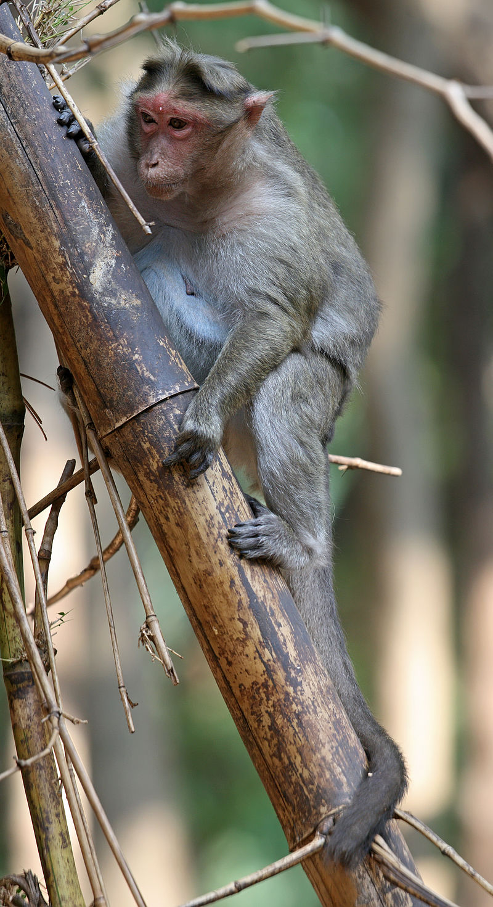

Обезья́ны — четверорукие млекопитающие, наиболее близкие к человеку по строению тела[1] и происхождению, в широком смысле — все представители отряда приматов (Primates)[2]. Слово «обезьяна» появилось в древнерусском языке как заимствование из перс. بوزینه — «бузинэ» (возможно также влияние ст.‑слав. о҄пица) и стало широко известно после издания «Хожения за три моря» Афанасия Никитина. В словаре Д. Н. Ушакова уточняется, что abü zinä в арабском означает «отец блуда»[1].
